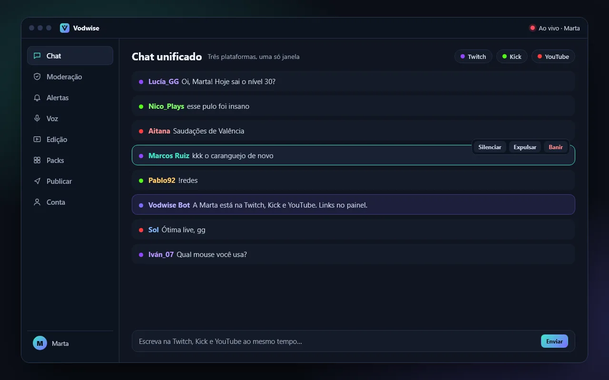
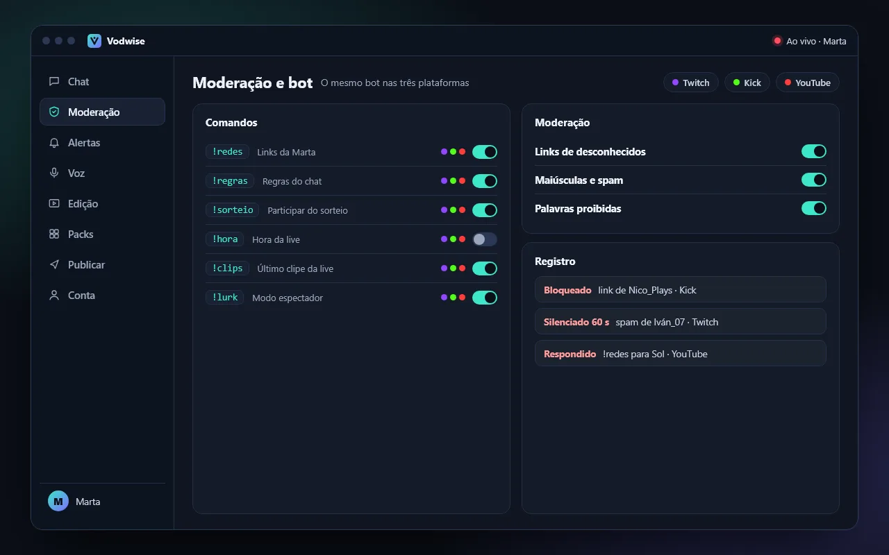
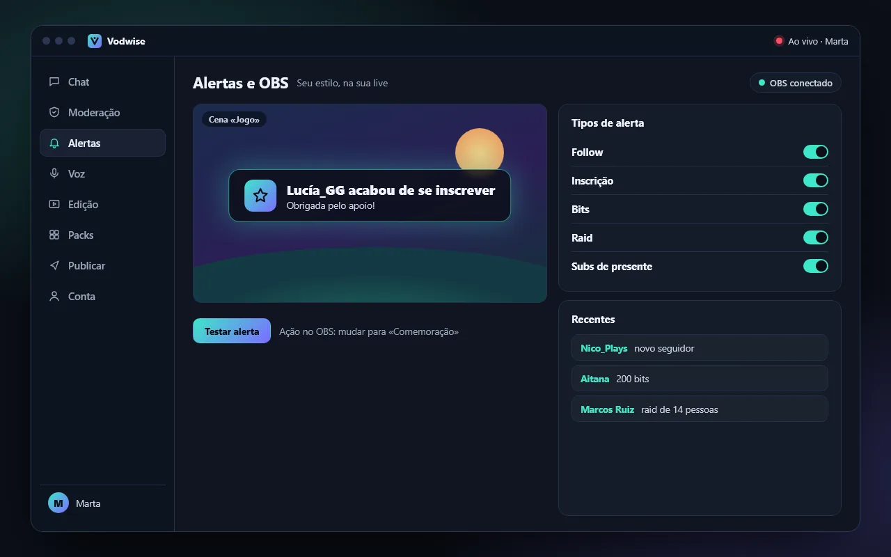
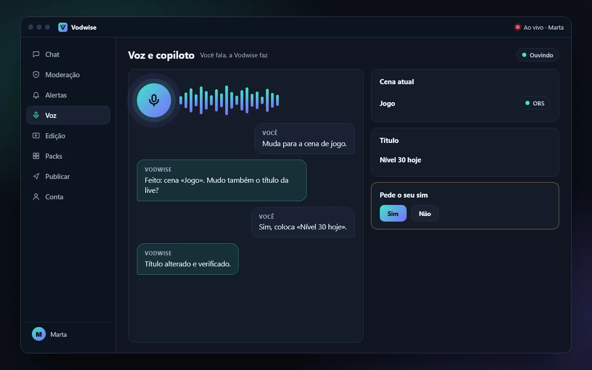
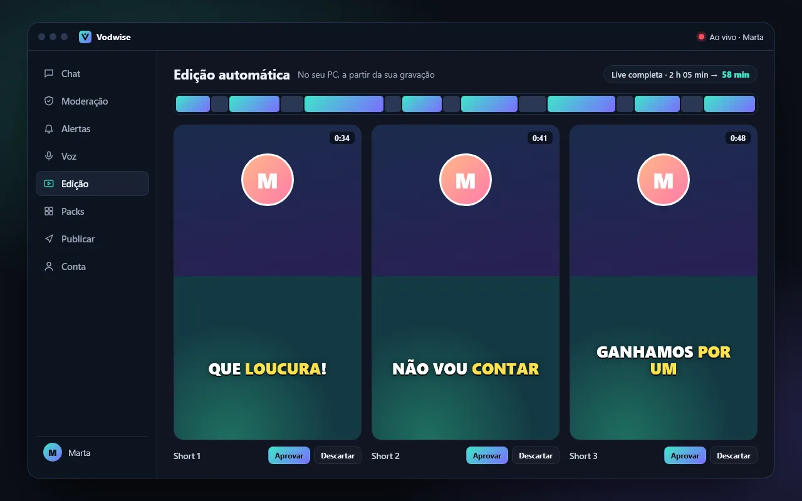
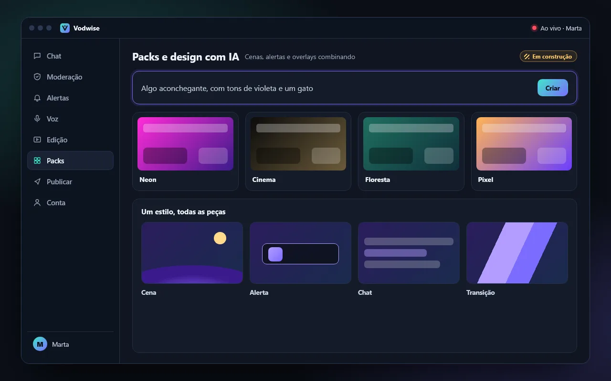
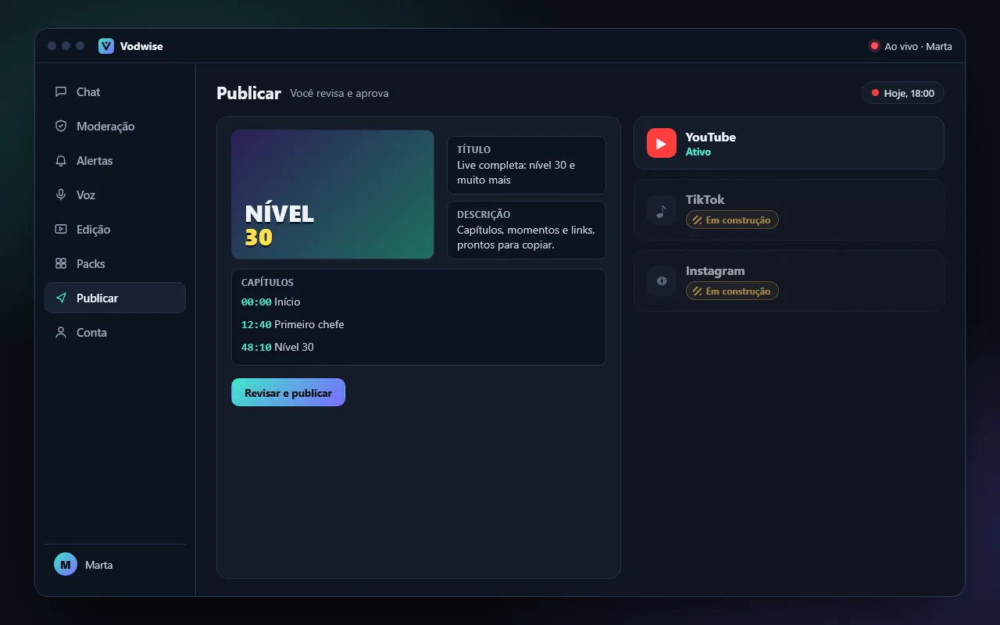
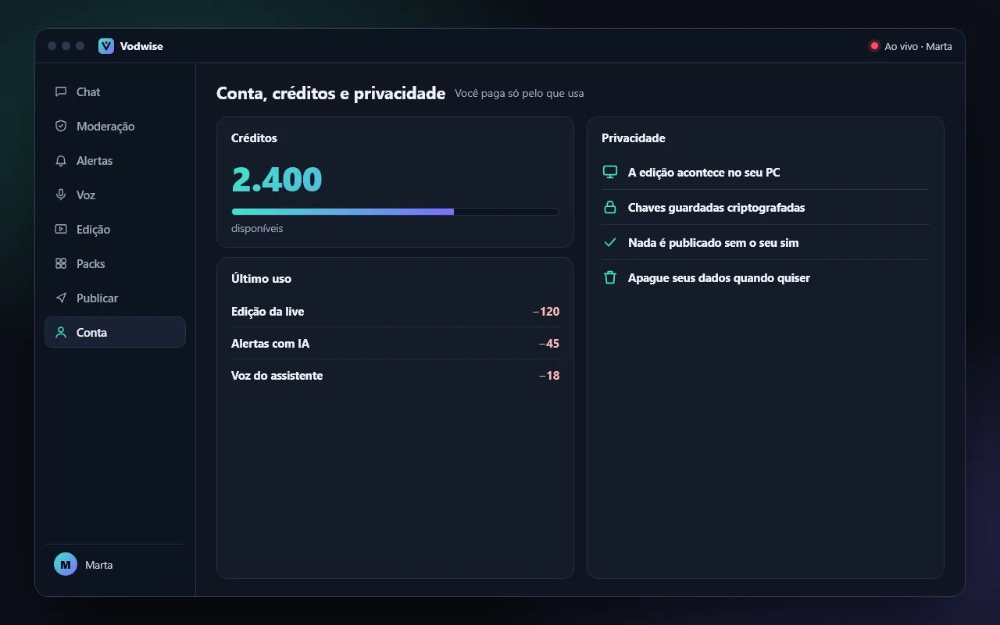

Funções
Chat multistream, bot, alertas e edição automática, em um só app
O Vodwise reúne em um app para Windows o que você usa antes, durante e depois da live. Estas são as oito áreas; o detalhe de cada uma está na ajuda.
Ainda não está disponível. Chegará mais adiante.
-

Chat unificado
Twitch, Kick e YouTube em uma só janela, com selos e emotes.
Você responde nas três plataformas e modera com um clique a partir do nome.
-

Moderação e bot
Comandos, temporizadores, agradecimentos e filtros de spam.
O mesmo bot nas três plataformas, com um interruptor para cada comando.
-

Alertas e OBS
Alertas animados por tipo e plataforma, overlays e cenas sob medida.
O Vodwise ajuda a montar o OBS e funciona com Stream Deck e botoneira.
-

Voz e copiloto
Você fala com o Vodwise como com uma pessoa: troca de cena, de título ou de categoria.
Ele prepara a mudança, mostra para você e aplica quando você diz «sim».
-

Edição automática e Shorts
Ao terminar a live, o Vodwise corta silêncios, escolhe os momentos e monta o vídeo com capítulos e legendas.
De 4 a 6 Shorts verticais por live, sem marca d'água.
-

Packs e design com IA
Descreva seu estilo e a IA propõe cenas, alertas e overlays combinando com seu logo.
Os packs prontos para usar: Em construção
-

Publicar
YouTube: o vídeo sobe como privado e você revisa o vídeo e os textos antes de publicar.
TikTok e Instagram: Em construção
-

Conta, créditos e privacidade
Você paga com créditos pelo que usa, e as recargas não expiram.
Sua gravação não sai do seu PC e nada é publicado sem a sua aprovação.
O detalhe está na ajuda
Cada função tem sua explicação passo a passo na ajuda do Vodwise.
Ainda não está disponível. Chegará mais adiante.